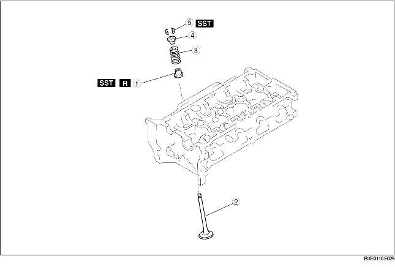

1. Plaats de onderdelen in de aangegeven volgorde, zie de tabel.

.
1. Druk het klephoedje met de hand op de klepgeleider.
2. Tik voorzichtig op de aangegeven manier met een kunststof hamer tegen SST.
1. Plaats de klepspietjes met SST.